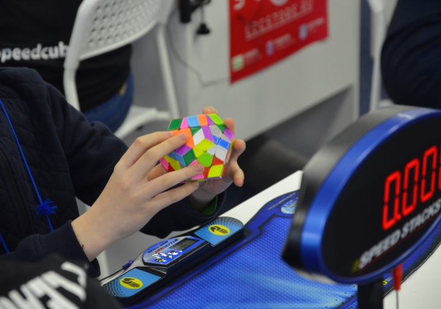
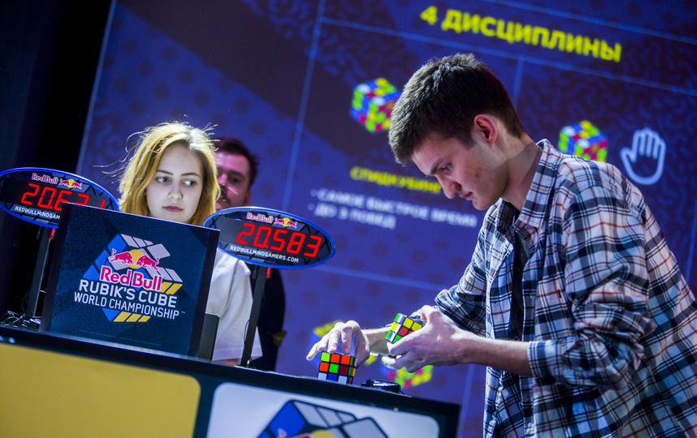
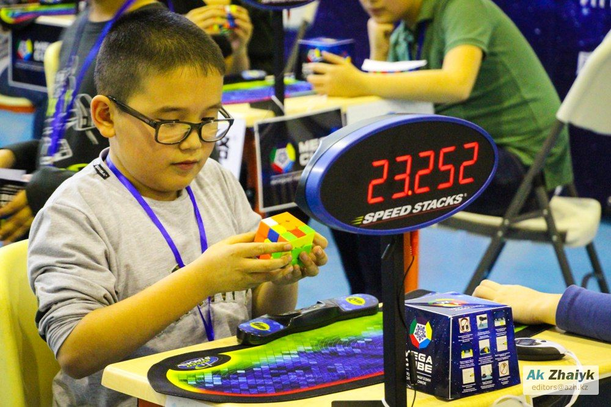

{header}
Кубик Рубика (первоначально «магический кубик», венг. bűvös kocka) — механическая головоломка, изобретённая в 1974
году (и запатентованная в 1975 году) венгерским скульптором и преподавателем архитектуры Эрнё Рубиком.
Головоломка представляет собой пластмассовый куб 3×3×3 (в первоначальном варианте) с 54 видимыми цветными
наклейками.
Грани большого куба способны вращаться вокруг 3 внутренних осей куба. Каждая из шести граней состоит из девяти
квадратов и окрашена в один из шести цветов,
в одном из распространённых вариантов окраски, расположенных парами друг напротив друга: красный — оранжевый, белый
— жёлтый, синий — зелёный.
Повороты граней позволяют переупорядочить цветные квадраты множеством различных способов. Задача игрока заключается
в том, чтобы «собрать кубик Рубика»:
поворачивая грани куба, вернуть его в первоначальное состояние, когда каждая из граней состоит из квадратов одного
цвета.
golovolom – это магазин самых качественных головоломок в Беларуси. В golovolom много идей для подарков.
Здесь каждый, независимо от возраста и статуса, найдёт развлечение по душе.
Наш магазин является спонсором множества спортивных состязаний по сборке головоломок на скорость.



{footer}